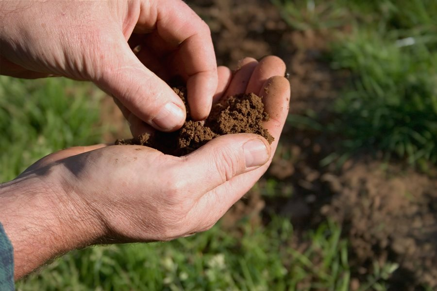
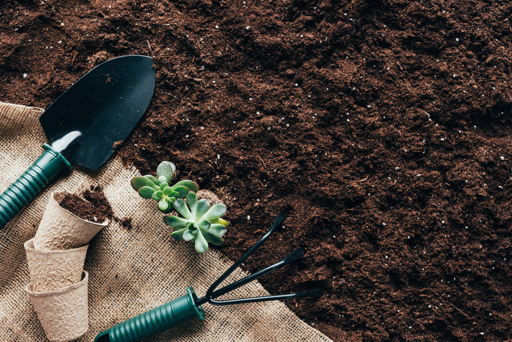

Any type of soil can be transformed into healthy garden soil with a little dedication and hard work. Improving your soil takes time and is an ongoing process. Organic matter needs to be replenished frequently to keep the cycle going. Below are seven ways you can improve garden soil.
Add Compost
Compost is decomposed organic matter, and it is the best thing you use to improve the health of garden soil. Working compost into soil will feed the soil, improve soil structure, enable soil to retain nutrients, promote good drainage while also absorbing water deep in the soil, keeps soil loose so air can reach plant roots, helps maintain a neutral pH, and protects plants from many common garden diseases.
Get a Soil Test
Adding compost is not a once-and-done type deal. It is part of a continuous process to renew nutrients in the soil. Conduct a soil test every few years to determine what additional nutrients are needed to promote plant growth and production. Soil testing kits are sold online and wherever garden supplies are sold and are very easy to do yourself. Soil samples can also be taken to your local county extension office for a more in-depth analysis. A basic soil test gives readings for soil pH, potassium (K), phosphorus (P), calcium (Ca), magnesium (Mg), and sulfur (S). A soil test will also let you know the level of organic matter, lead content, and give you recommendations for adjusting these levels.
Mulch the Soil Surface
Mulch is a must for healthy garden soil and strong plants. It stimulates natural growing conditions, retains soil moisture, keeps soil cool, and prevents weed growth. The mulch will slowly decompose and add organic matter to the soil to increase fertility.
Prevent Soil Compaction
Clay soil tends to compact easily with just the weight of winter snow and ice. Adding organic matter over time will balance the soil structure. Working with soil that is too wet will also compact the soil. In spring, wait until the snow melts and the garden drains, and the soil is dry enough so a handful of soil doesn’t stick together. Prevent soil compaction by staying off of it. Walking on the soil compresses it and prevents water, air, and oxygen from reaching the roots. Instead, establish permanent garden beds by dividing up your area to growing beds and walking paths so you never have to walk on the soil. Size your garden beds so you can reach into all areas without stepping on the soil, about 3-4 feet wide. Allow enough room in between the beds for a wheelbarrow to fit through or a manual lawnmower if you are keeping grass in your paths, about 2-feet minimum.
Rotate Crops Each Year
Planting crops in different garden locations every year prevents the depletion of nutrients and interrupts the cycles of pests and diseases so the garden soil stays healthy. Potato pathogens provide a good example of how crop rotation keeps garden soil healthy. Nematodes and fungi that cause scabby skin patches on potatoes increase rapidly in the soil during just one growing season. This year’s crop may not be affected, but if next year’s crop is planted in the same location; it will be destroyed by the hungry disease organisms that are in the soil from the previous season. The disease spores and organisms will die out naturally if they do not feed on their preferred crop.
Grow Cover Crops
Cover crops are grown primarily to benefit the soil, but some of them can serve double-duty by providing food too. Planting a cover crop near the end of the garden season and allowing it to remain in the garden during the winter provides multiple benefits for the garden. A cover crop protects the soil from being eroded by heavy rain, winds, and snow melt-off. The crops will also prevent the soil from compacting, and stop weed growth during warm winter months. Crops like kale, radishes, turnips, and other broad-leaf greens are ideal for use as cover crops and food sources during the winter. Clover, ryegrass, legumes, and peas are also good cover crops for winter. Turn under any remaining crops in spring to act like a green manure. The cover crop plants will decompose after being turned under and increase soil fertility.

Add Aged Animal Manure
Add aged animal manure to improve garden soil health and fertility. Fresh animal manure is too hot and will burn plants, and may harbor pathogens harmful to humans. So allow the manure to age for several months to a year before adding to garden soil. Chicken, cow, rabbit, horse, goat, sheep, and bat droppings are rich in nutrients and will improve soil structure when incorporated into garden soil. Animal manures can be contaminated with pesticides and herbicides and cause herbicide injury in your vegetable garden. Once it is in your soil, it is difficult to eliminate. If you purchase manure, get assurance from the farmer that the animals didn’t graze on or eat hay treated with pesticides or herbicides.